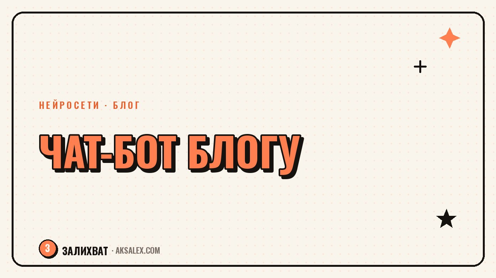

Как сделать чат-бота для блога с помощью нейросети

Каждый день одни и те же вопросы в директе: «а сколько стоит», «а когда следующий поток», «а есть рассрочка». Чат-бот на нейросети отвечает на них за тебя, пока ты снимаешь контент или спишь. Это не обезличенная рассылка, а живой диалог: бот понимает вопрос, даже если он сформулирован не так, как в инструкции, и ведёт клиента дальше по сценарию. Разберём, как собрать такого бота без единой строчки кода.
Зачем блогеру чат-бот и когда он не нужен
Чат-бот нужен там, где вопросы повторяются: цена, условия, запись, часто задаваемые вопросы про продукт или курс. Если у тебя десять подписчиков и три личных сообщения в неделю, бот не нужен - проще ответить самому. Если сообщений становится по 30-50 в день, ручные ответы начинают съедать время, которое можно потратить на съёмку.
Второй повод для бота - ночь и выходные. Подписчик написал в 23:00, а ты отвечаешь в 10 утра - за это время человек мог уже передумать или найти похожий продукт у конкурента. Бот отвечает сразу, даже если ты офлайн.
Когда бот скорее мешает
- Если аудитория маленькая и ценит именно личное общение с тобой
- Если вопросы редко повторяются и каждый раз уникальны
- Если бот отвечает роботично и это видно с первой фразы - лучше переписать сценарий, чем выключать живое общение совсем
Что умеет простой чат-бот на нейросети
Современный бот на нейросети - это не дерево из кнопок «нажми 1, нажми 2». Он понимает вопрос в свободной форме: «а если я приду не с начала потока» и «можно ли подключиться после старта» для него один и тот же вопрос, хотя слова разные.
Бот умеет вести подписчика по сценарию: собрать имя и телефон, объяснить условия, предложить записаться на бесплатную консультацию и передать диалог тебе, если вопрос вышел за рамки базы знаний. Всё, что он не знает, он честно говорит, что передаст человеку - а не придумывает ответ.
Как собрать бота без кода: пошагово
Собрать рабочего бота можно за один вечер, если заранее подготовить ответы на частые вопросы.
- Выпиши 15-20 вопросов, которые реально задают подписчики за последний месяц
- Напиши короткие честные ответы на каждый - без маркетингового жира, по сути
- Загрузи эти вопросы и ответы в конструктор бота как базу знаний
- Настрой приветственное сообщение и 2-3 кнопки с самыми частыми темами
- Проверь бота сам: напиши ему 10 разных формулировок одного вопроса и посмотри, понимает ли он их
Бот хорош ровно настолько, насколько хороша база знаний, которую в него загрузили - за пять минут собранный список из трёх вопросов даст пять минут пользы.
После первого запуска обязательно читай, что бот отвечает неправильно, и дополняй базу - через неделю реальных диалогов он станет заметно точнее.
Где подключить готового бота
Самые частые площадки для блогера - Telegram, ВКонтакте и сайт. В Telegram бот подключается быстрее всего и привычен аудитории. В ВК удобно встроить бота прямо в сообщения группы. На сайте бот работает как виджет-консультант в углу экрана.
Что учесть при выборе площадки
- Там, где живёт основная аудитория - не нужно вести бота туда, где подписчиков почти нет
- Простота подключения без разработчика - большинство конструкторов дают готовую интеграцию
- Возможность быстро отредактировать сценарий самому, без обращения в поддержку
Сравнение конструкторов чат-ботов
Разница между сервисами в основном в том, насколько гибко настраивается сценарий и сколько это стоит на старте.
| Сервис | Код нужен | Бесплатный тариф | Для чего удобнее |
|---|---|---|---|
| Чат-бот-конструктор с ИИ-блоком | Нет | Есть, с ограничением сообщений | Быстрый старт для Telegram и ВК |
| Конструктор сайтов со встроенным чатом | Нет | Есть базовый виджет | Консультант прямо на сайте или лендинге |
| Готовая платформа с настройкой базы знаний | Нет | Пробный период | Когда вопросов много и нужна умная база ответов |
| Самостоятельная настройка через API нейросети | Да, минимальный | Зависит от нейросети | Когда нужна полная гибкость и есть кто помочь с настройкой |
Для первого бота достаточно бесплатного тарифа любого конструктора без кода. Переходить на платный смысл есть, когда бот ведёт реальные продажи и экономит часы в день.
Частые ошибки при настройке бота
Самая частая ошибка - загрузить в бота маркетинговый текст вместо честных ответов, из-за чего бот звучит как реклама и подписчики быстро выходят из диалога. Вторая ошибка - не оставить лёгкий способ переключиться на живого человека, если вопрос сложный.
Третья ошибка - запустить бота и забыть про него. Сценарий нужно обновлять: добавлять новые вопросы, убирать устаревшие цены и условия, иначе бот начнёт давать неверную информацию, и это ударит по доверию сильнее, чем если бы бота не было вовсе.
Частые вопросы
Сколько времени нужно, чтобы сделать чат-бота для блога?
Первая рабочая версия собирается за один-два вечера, если заранее выписать частые вопросы подписчиков. Дальше бота улучшают постепенно, по мере того как видно, где он отвечает неточно.
Нужно ли уметь программировать, чтобы сделать чат-бота?
Нет, современные конструкторы с ИИ-блоком позволяют собрать бота через готовый интерфейс без единой строчки кода. Программирование нужно только для сложных кастомных сценариев через API.
Какую нейросеть выбрать для чат-бота блогера?
Для старта подойдёт любой конструктор с готовой интеграцией ИИ-ответов - выбор зависит больше от площадки, где живёт аудитория, чем от конкретной нейросети. Главное - бесплатный тариф и простая загрузка базы вопросов.
Может ли бот заменить личное общение с подписчиками?
Полностью нет и не должен: бот закрывает повторяющиеся вопросы и работает ночью, но решение о покупке и доверие всё равно строятся на живом общении с тобой. Лучше использовать бота как первую линию, а не замену себе.
Что делать, если бот отвечает неправильно?
Нужно регулярно просматривать диалоги и дополнять базу знаний недостающими ответами - это обычная часть настройки, а не признак того, что бот не подходит. Через пару недель таких правок точность ответов заметно растёт.
Раз тема оказалась полезной, вот что почитать следующим. Нейросети помогают грумеру вести запись, подбирать стрижку и вести соцсети без лишней возни.
Читать статью →а не вручную